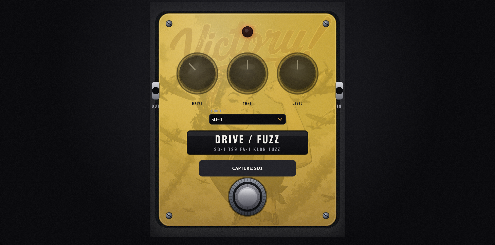
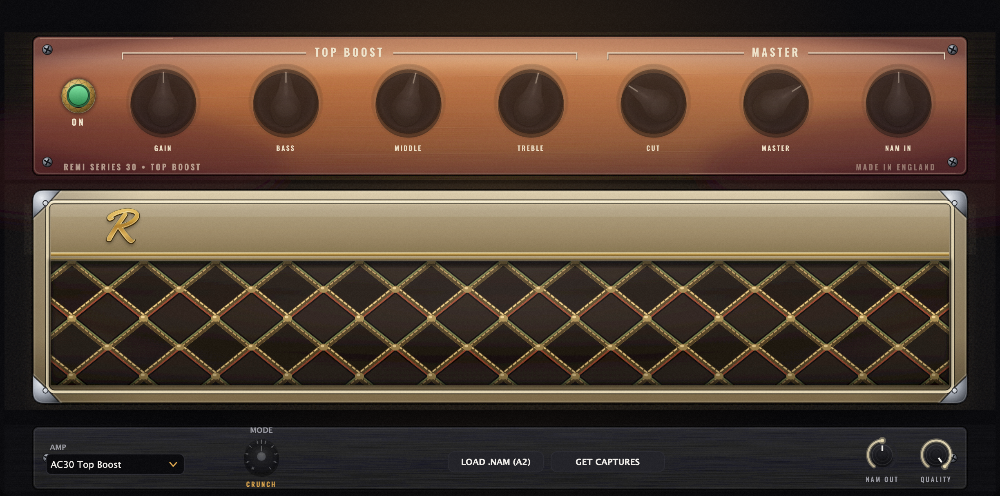
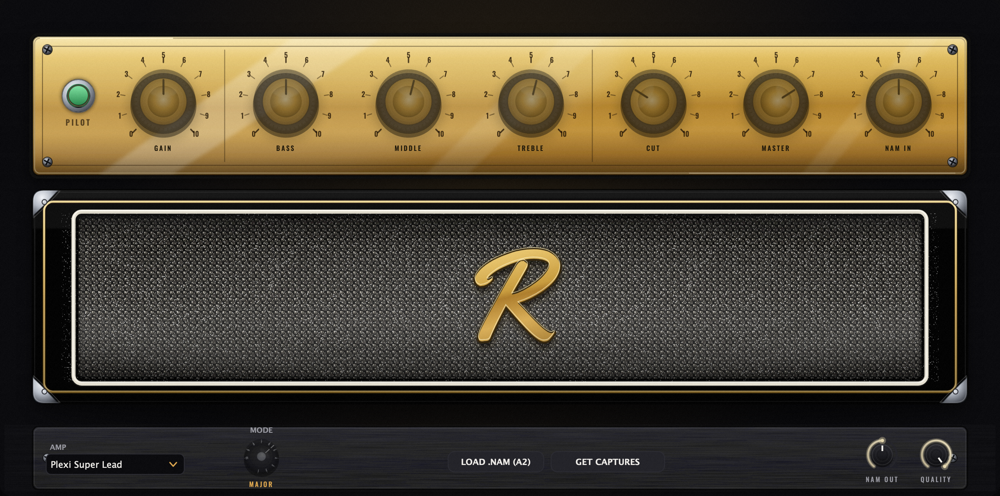
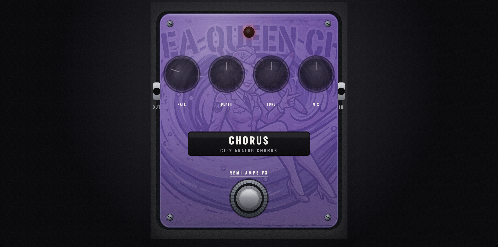
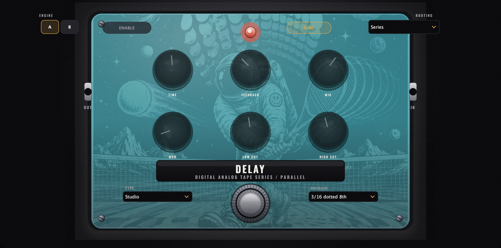
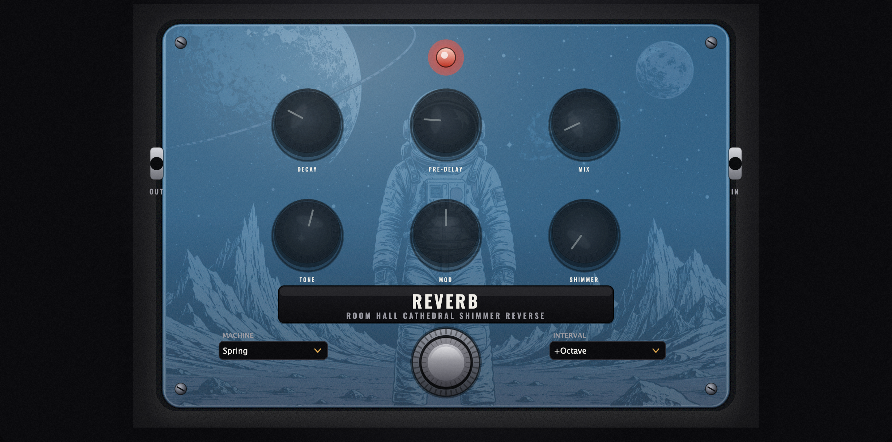
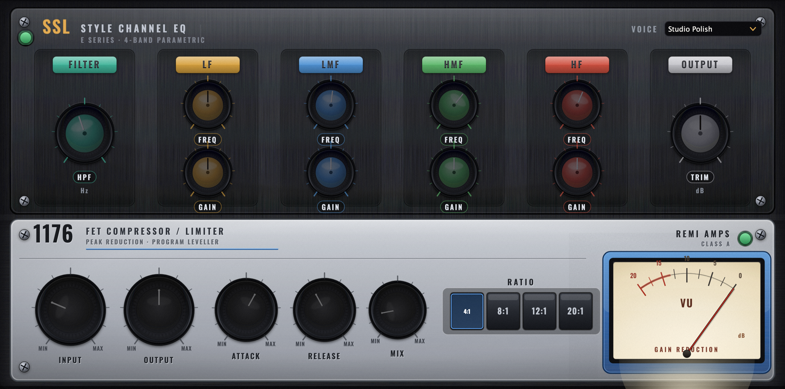

REMI AMPS · OVER THE EDGE
Your entire guitar rig. Free.
Three amplifiers captured from the real things — twelve voicings in all. A full pedalboard. Studio-grade EQ & compression. 48 presets tuned by ear. One plugin — powered by the NAM A2 neural engine.
100% free · no account · no nags

Not modeled. Captured.
Every amp in REMI is a neural capture of a real, mic'd-up rig — the chime, the sag, the way it breaks up. Three amplifiers, twelve hand-picked voicings, all running through the NAM A2 engine.
The amplifiers
Three amps.
One window.
Switch the head and the whole front panel transforms — tolex, grille, wordmark and all. The AC30 sweeps clean to crunch; the Plexi and the Modern High Gain stack swap a whole captured head per voicing.
- AC30 Top Boost
- Plexi Super Lead
- Modern High Gain


A2 capture
Full-rig, cab baked in
7-knob tone stack
The pedalboard
A board that reorders itself.
Drag any block anywhere in the chain. Every pedal is hand-drawn, photoreal, and built from scratch.




The studio strip
Mix-ready, the moment you plug in.
A console-grade SSL-style 4-band EQ into a parallel 1176 FET compressor — complete with a live VU needle — sit at the end of the chain so your tone lands finished, not raw.
Sweepable HPFProportional-Q bellsParallel comp4 / 8 / 12 / 20:1
0Factory presets
0Captured amps
0Neural captures
0Price, forever
NAM A2 engine
The latest Neural Amp Modeler architecture — A2 captures only, level-matched by construction.
Reorderable chain
Gate, comp, drive, amp, cab, modulation, delay, reverb, studio — in any order you like.
Presets as files
Every preset is a JSON file. Drop one in a folder and it appears in the menu. No rebuild.
Auto cab match
Full-rig captures bypass the cab automatically; amp-only captures load the right IR.
Real I/O control
Dedicated input & output gain, a true noise gate with hold, and one-click audio settings.
Every format
Standalone app, VST3, Audio Unit and AAX for Pro Tools — Windows and macOS, 64-bit.
100% FREE
Grab your rig.
Pick your platform. Install. Plug in. That's it — no account, no trial, no catch.
Windows
Windows 10 / 11 · 64-bit
Download installerOne installer · Standalone app + VST3
macOS
macOS 11+ · Intel & Apple Silicon
Download installerOne installer · App + AU + VST3 + AAX
In the box
One free download · no account
- Standalone, VST3, AU & AAX
- 3 amps · 17 neural captures
- Full pedalboard & studio strip
- 48 presets, ready to play